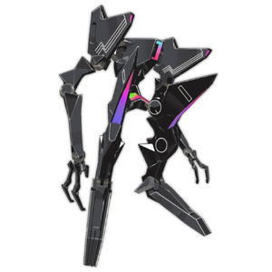

NX-Obsidian
背景

一台战争机器。以我们的标准看很先进，但在其本土维度中却很原始。随着该维度的战争升级，武器和战术也不断演化，最终创造出 NX Constructs。Obsidian 是早期 NX 型号之一，在新型单位出现后最终被遗弃。现在，它们只是在仓库中与许多类似 NX-Obsidian 的机器一起腐朽并被遗忘，每一台都带着一条硬编码指令：杀戮。
策略
NX-Obsidian 战斗由 1 个阶段组成。
NX-Obsidian 拥有高伤害招式组，以及无法招架的紫色爆炸攻击。玩家需要警惕强力激光，这些激光会对幸存者施加严重燃烧。
不过，NX-Obsidian 是一个特殊案例，它弱于物理。
统计
基础 HP：8400
伤害：物理和火焰
| 属性 | 抗性 |
|---|---|
| 物理 | 弱点 (1.25x) |
| 火焰 | 抗性 (0.75x) |
| 冰霜 | 抗性 (0.75x) |
| 电击 | 抗性 (0.75x) |
| 光耀 | 抗性 (0.75x) |
| 暗影 | 弱点 (1.25x) |
| 毒 | 中性 (1x) |